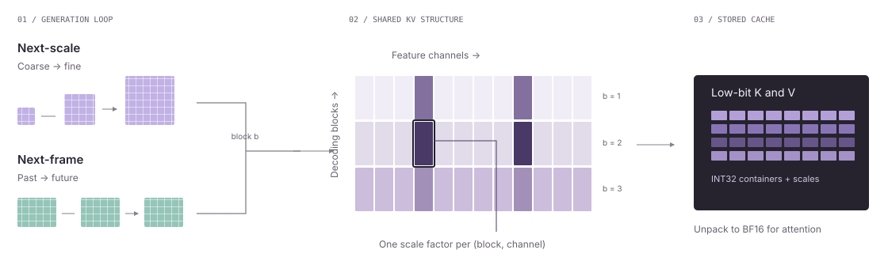
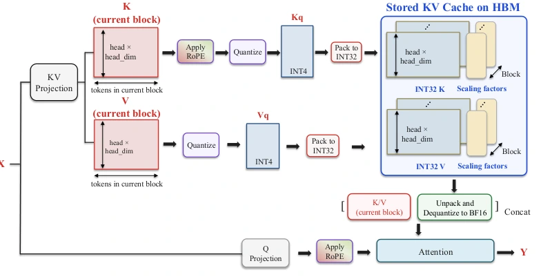
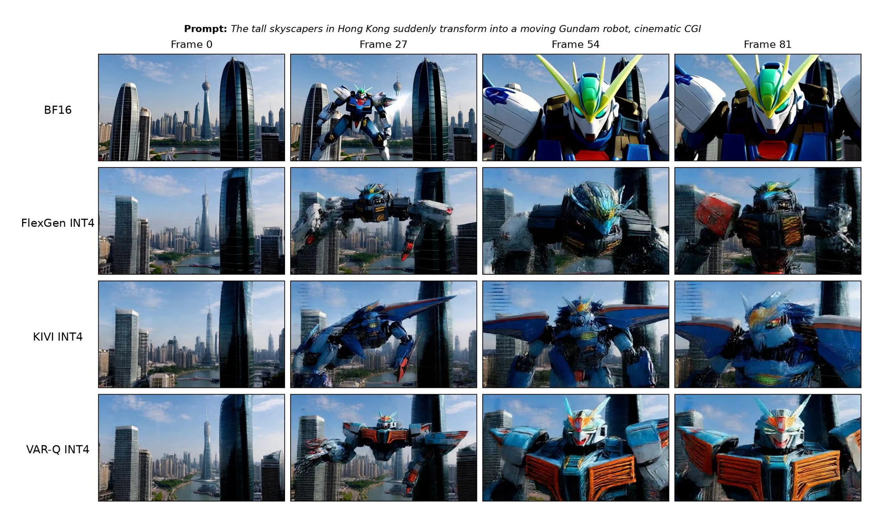

Next-scale
01 / 03InfinityStar · 720p
A person skydiving from a hot air balloon into a sea of clouds.
NeurIPS 2026 / Visual autoregressive generation
Tuning-free KV cache quantization built around the channel × block structure of visual autoregression.
Original generated videos · synchronized BF16 / VAR-Q pairs
A person skydiving from a hot air balloon into a sea of clouds.
A little boy is riding a dragon in the sky to a castle
Same model and prompt within each pair. Precision labels describe the KV cache.
Explore all models & baselines ↗less KV memory, up to*
larger inference batches, up to*
visual AR models evaluated
calibration or retraining steps
*Summary results reported in the paper. Gains depend on the model and precision; the batch-size result uses a single NVIDIA A100 80GB. See the configurations below.
A shared formulation
Visual autoregression advances in blocks. Next-scale models predict a resolution scale at a time; next-frame models extend a video through time. VAR-Q uses the blocks supplied by each model’s generation loop.
Across both paradigms, KV magnitudes have a shared channel × block structure: a small set of channels carries large values, and their magnitudes shift between blocks. Quantization groups should follow both axes.
The next-block view. A block denotes the visual tokens emitted at one decoding step. Here, it unifies the scale and frame settings evaluated in the paper.

01 / The method
A channel × block view of the KV cache
explains where quantization groups belong.
Masking just the top 0.5% of channels in LongLive collapses generation. Masking ten times as many inlier channels leaves quality largely intact.
Large magnitudes persist along feature channels and shift across generation blocks. Grouping along only one axis misses part of the structure.
A scale or frame defines a block. VAR-Q reuses these boundaries, with no outlier detection, calibration data, or retraining.

Explore the grouping
VAR-Q separates feature channels and generation blocks, so each group follows both axes of the cache.
Illustrative grouping diagram. Colors are schematic, not measured activations.
| Grouping | K error ↓ | V error ↓ | Attention error ↓ | Output error ↓ |
|---|---|---|---|---|
| Per-tensor | 24.01 | 43.54 | 29.20 | 32.32 |
| Per-block | 21.59 | 32.93 | 26.36 | 22.78 |
| Per-channel | 12.11 | 18.07 | 16.17 | 13.13 |
| Channel × block | 10.04 | 15.28 | 13.38 | 10.13 |
Relative Frobenius error: εX = ‖X − X′‖F / ‖X‖F. Joint grouping gives the lowest error in all four columns. Source ↗
For block b and feature channel c, VAR-Q applies uniform symmetric quantization to the tokens in that group, with one scale factor. The same grouping rule is used for K and V.
K = {K(b)}b=1…B, K(b) ∈ ℝnb × D
The default sub-block ratio is r = 1. A block of length L is split into ⌈L / (r Lmax)⌉ sub-blocks. Smaller r refines grouping within existing boundaries.
In next-scale decoding, the largest scales are affected first; in next-frame decoding, equal-size blocks are partitioned uniformly. §3.4 ↗
Controlled evidence · Table 5
Removing the channel axis sharply degrades generation. Keeping channels but removing block boundaries also loses quality—on both a next-scale and a next-frame model.
| Grouping | VAR-d30 FID ↓ | Self-Forcing VBench Total ↑ |
|---|---|---|
| Channel × block | 1.97 | 80.99 |
| Without block axis | 2.83 | 79.38 |
| Without channel axis | 12.07 | 67.22 |
Metrics are compared within each column. Full ablation →
| Grouping | VAR FID ↓ | IS ↑ | PSNR ↑ | SSIM ↑ | LPIPS ↓ | VAR KV (GB) ↓ | SF Subject ↑ | Dynamic ↑ | Aesthetic ↑ | Total ↑ | SF KV (GB) ↓ |
|---|---|---|---|---|---|---|---|---|---|---|---|
| Without block axis | 2.83 | 292.13 | 12.07 | 0.257 | 0.538 | 9.45 | 88.49 | 69.00 | 54.51 | 79.38 | 16.90 |
| Without channel axis | 12.07 | 159.52 | 10.42 | 0.198 | 0.645 | 9.34 | 79.17 | 27.00 | 33.86 | 67.22 | 16.87 |
| Per-token & per-head | 2.21 | 292.12 | 11.97 | 0.261 | 0.545 | 10.51 | 90.18 | 67.00 | 54.96 | 79.46 | 17.93 |
| Per-token | 7.13 | 203.50 | 10.51 | 0.208 | 0.635 | 9.38 | 78.55 | 25.50 | 39.51 | 67.72 | 16.96 |
| VAR-Q (full) | 1.97 | 323.67 | 13.54 | 0.312 | 0.437 | 10.44 | 91.28 | 75.50 | 57.40 | 80.99 | 16.95 |
Same number and sizes of groups, shifted by half a block: misalignment lowers Self-Forcing quality by 0.45 points in this controlled experiment.
| Boundary placement | Subject ↑ | Dynamic ↑ | Aesthetic ↑ | Quality ↑ |
|---|---|---|---|---|
| Misaligned | 90.80 | 73.50 | 56.75 | 80.46 |
| Aligned | 91.23 | 74.50 | 57.41 | 80.91 |
Table 6 is a separate alignment experiment; its aligned score is not substituted for Table 5’s full-method score. Source ↗
From algorithm to memory savings
VAR-Q quantizes the cache per channel and block, then packs low-bit values into INT32 storage. Before attention, cached values are unpacked and dequantized to BF16. Packing turns reduced precision into real KV-memory savings.
Read the algorithm
02 / Qualitative evidence
Next-scale images and video. Next-frame video.
Compare low-bit caches with BF16 across both paradigms.
Long-horizon generation
LongLive extends the next-frame setting to longer sequences. Compare motion and scene consistency with both videos on the same timeline.
These clips use 6-bit KV caches. The paper separately reports INT4 and INT6 results.
See the measured tradeoff ↗New York City submerged like Atlantis. Fish, whales, sea turtles and sharks swim through the streets of New York.
Explore the samples
Original project samples · BF16 reference and low-bit methods
Loading the sample index…
 VAR-Q · INT2BF16
VAR-Q · INT2BF16
Examine the whiteboard text and the position of the cats. Switch methods to compare each low-bit output against the same BF16 reference.
A selected example from Figure 1. Quantitative INT2 results and their quality tradeoffs are reported in Table 2 of the paper.
More image examplesAcross time

03 / Mechanistic attribution · §3.3
Why does the channel × block pattern emerge? Three experiments separate prompt-dependent outliers, persistent channel imbalance, and position-dependent magnitude shifts.
01 / Architecture or input?
If outlier channels are tied to the architecture, they should recur across different prompts. Among the top 1% of channels, 53–62% of K outliers persist across all 10 prompts, compared with only 7–14% for V.
This supports a persistent architectural component in K. V outlier identity changes much more with the input. The remaining experiments trace this architectural component through the K projection chain.

02 / The channel axis
Projection weights seed the imbalance. Normalization gains can amplify it. RoPE redistributes it between paired channels. Each stage contributes to predicting which channels become outliers.
Heavy-tailed row norms in the key projection create an initial channel-magnitude imbalance.
Where post-projection RMSNorm is present, its learned channel gains amplify this imbalance.
Rotation scatters magnitude between paired channels while preserving each pair’s ℓ2 norm.
The evidence
At the top 1%, WK alone recovers 35–42% of final K outliers. Adding γK improves recall; including RoPE scattering brings the full chain to 55–63× random recall.
As a control, WV predicts V outliers at only 5–6× random recall. Weight structure explains much more of K’s outlier identity than V’s.

03 / The block axis
RoPE’s angle changes with position. For a paired set of K channels, this produces cosine and sine modulation: one channel can become large while its partner becomes small, even without a change in the underlying input amplitude.
The pair’s per-token ℓ2 norm is conserved. Individual channel magnitudes are not. Fast-rotating pairs produce stronger cross-block swings; slow pairs remain comparatively stable.

| Quantization point | Precision | Subject ↑ | Background ↑ | Dynamic ↑ | Aesthetic ↑ | Quality ↑ | KV (GB) ↓ |
|---|---|---|---|---|---|---|---|
| Pre-RoPE | INT6 | 93.63 | 93.97 | 74.50 | 60.00 | 82.93 | 27.50 |
| Post-RoPE | INT6 | 93.96 | 94.76 | 76.50 | 61.25 | 83.34 | 27.50 |
At the same memory footprint (59.25% below BF16), post-RoPE quantization scores higher on every metric reported in this ablation. Appendix F ↗
Persistent channel imbalance motivates per-channel grouping. Cross-block magnitude shifts motivate block-aligned boundaries. V has weaker architectural attribution, but shares the measured two-axis structure—so VAR-Q applies the same channel × block rule to both caches.
04 / Quantitative evidence
Reported quality and cache memory,
with the configuration kept in view.
InfinityStar: 80.59 VBench vs. 82.33 BF16.
LongLive: 80.94 VBench vs. 80.92 BF16.
Self-Forcing: 80.99 VBench vs. 82.94 BF16.
Tables 2–4 · 9 configurations · 64 reported rows
Memory includes scale-factor overhead at the listed batch size. Δ is the raw metric difference from BF16; arrows indicate whether higher or lower is better. Missing configurations were not reported.
Use the precision filter above; scroll horizontally to inspect every metric. BF16 remains visible as the reference.
Loading the paper’s numerical results…
Implementation
The public repository provides the core quantization and packing utilities, plus VAR and Infinity examples. Start with the model-specific notebooks and follow the repository’s environment and checkpoint instructions.
Explore the repositorygit clone https://github.com/lujiaji/VAR-Q.git
cd VAR-QThe paper evaluates image and video models. The linked public quick-start currently documents VAR and Infinity image generation.
Reference
If VAR-Q is useful for your research,
please cite the paper.
@inproceedings{xu2026varq,
title = {VAR-Q: Tuning-free KV Cache Quantization
for Visual Autoregressive Image and Video Generation},
author = {Boxun Xu and Jiaji Lu and Yuxuan Yin and
Zihu Wang and Ziyue Liu and Yu Wang and
Zirui Liu and Peng Li},
year = {2026},
booktitle = {Advances in Neural Information Processing Systems},
url = {https://boxunxu.top/assets/pdf/VAR-Q.pdf}
}